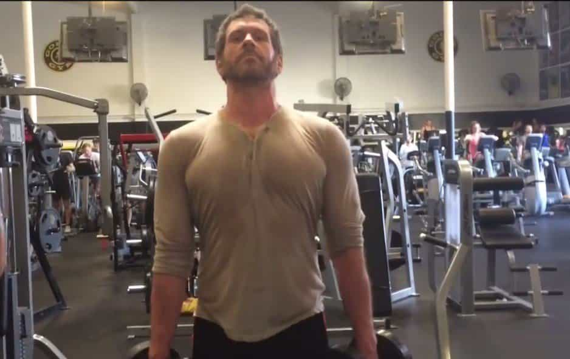
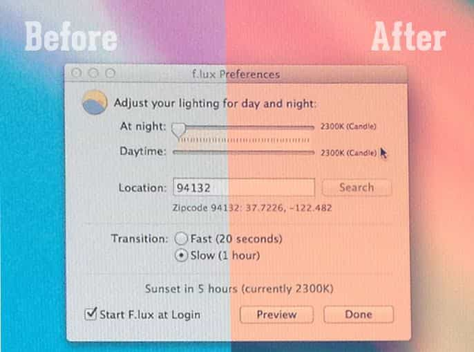
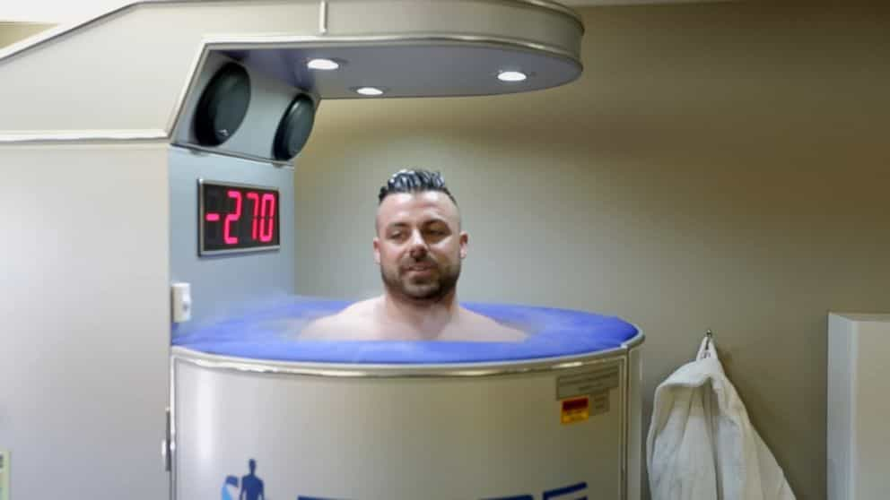
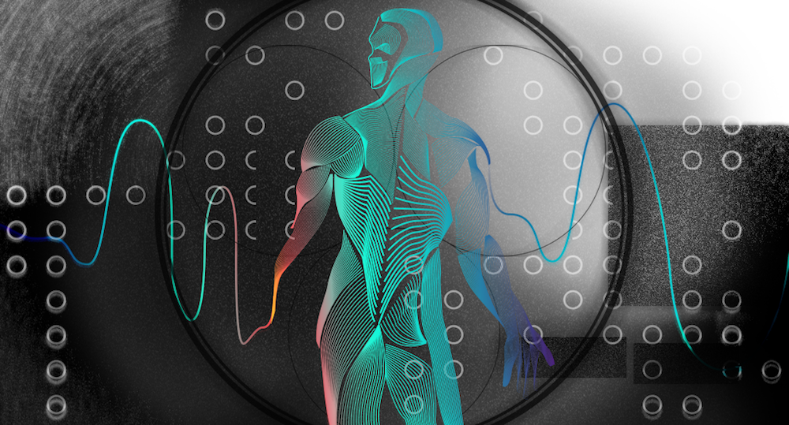

Everywhere you look, there’s some self-proclaimed expert spewing complete nonsense, trying to get you to buy his latest program for “just $19.95.” The fitness industry is perhaps one of the most BS-ridden industries in all of existence, and the emerging bio-hacking industry is right up there with it.
Bio-hacking is exactly what it sounds like—hacking your biology. Bio-hackers aim to tweak their environments, adjust their food intakes, alter exercise methods, and use technology to create an optimal body and mind. Unfortunately, despite the very cool premise, this industry is filled with scam artists and outright liars.
Most of the best “bio-hacks” can be done for free, and only a few are expensive (upwards of $1,000). As someone who’s been involved in this sphere of influence for years now, here’s a list of my favorite and most effective bio-hacks.
1. Binaural Beats
“Do binaural beats work?” one of my clients asked. “Yep, they work,” I said. “No, like do they REALLY work?” he asked again. “Yes,” I said. “Try them for yourself.”
Ever since I was introduced to binaural beats sometime around 2013, I’ve recommended them to pretty much every single client I coach—and while they may seem like something out of a science fiction movie, there’s a growing mountain of evidence proving their efficacy.
In layman’s terms, binaural beats are basically a series of frequencies that you listen to, played in such a way that they alter your brain’s state. Want to get “in state,” before going out to get a girl’s number? Great, listen to some “alpha frequency,” binaural beats. Or maybe you want to fall asleep quickly? That’s fine too, just plug in some “delta frequency,” binaural beats and watch yourself slowly drift off to sleep.
Binaural beats are hands down one of the most effective bio-hacking tools that I’ve discovered to date, and in my experience they will work for about 90% of people (the other 10% being hard cases). I recommend you use Life Flow, but others have found success with Brain.fm and Hemisync.
2. Alpha Male Posture

Mike Cernovich first popularized this technique in his “Gorilla Mindset Morning Routine,” which I urge you to check out. We all know that certain postures are associated with alpha males, and other postures are associated with beta males, correct? Well bio-hacking takes it one step further.
With the alpha male posture bio-hack, you simply emulate high status body language. This consists of standing up straight with your chest out, throwing your arms high in the air, and even pounding your chest like a silver back gorilla.
While it may seem stupid, it’s actually been proven to increase your testosterone and decrease your cortisol in a matter of just 60 seconds. In one experiment, researchers found that simply changing their test subjects’ body language led to a sharp difference in their ability to complete a scary task (bungee jumping).
If you’re wondering how to be an alpha male, the best place to start is to change your behaviors. This doesn’t mean to neglect the underlying thought processes behind being an alpha male, as attaining these is how you truly transform into one—but there’s definitely something to be said for faking it until you make it.
3. Light Therapy

For millenia, human beings had a complex and intimate relationship with the day and the night. They would follow the natural rhythms of the sunrise and sunset, which would dictate their daily schedule. Now however, with artificial light bombarding us at every second of the day, many of us are finding that our circadian rhythms are way out of whack.
This is where “light therapy,” comes in. Studies have shown that light regulation is an effective way to optimize your hormones, energy levels, and sleep—three things that every man should value.
The first, and easiest way for you to begin light hacking, is to install the application F.lux on your computer. It will automatically dim your screen to simulate the sunrise and sunset, eliminating blue frequency light waves which prevent the production of melatonin.
The second, and more expensive option, is to purchase a light box. They can range anywhere from $30 to $300, and although it might be a bit of an extra hassle, I highly recommend that you order one and try it out just for a week. I have one mounted right on my nightstand, programmed to blast my face with 10,000 lux of pure light, removing any possibility of me falling back asleep.
Exposing your eyes to this “artificial sunlight,” first thing in the morning helps to regulate your hormones and sleep cycle, so it can be especially helpful for men who have insomnia and other sleep problems.
4. Cryotherapy

Experts are slowly discovering that 99% of our ailments are due to inflammation. Depression has been linked to an inflamed brain, Crohn’s has been linked to an inflamed gastrointestinal tract, and even obesity has been linked to inflammation of the whole body.
In response to this discovery, a new branch of medicine known as “cryotherapy,” has begun emerging. The idea is simple—subject the body to ungodly temperatures in order to massively combat inflammation. While the premise is relatively easy to understand, it actually has incredible health benefits.
Cryotherapy centers have been popping up all over the country, and while they use advanced technology and liquid nitrogen to achieve such cold temperatures, you can create a DIY version yourself. Many athletes now use cold baths, which can run you around $1,500 for a one time installation fee, not including maintenance.
For the less financially endowed readers of the manosphere, however, you can pick up a couple bags of ice at your local gas station, dump them in your bathtub, and fill it with cold water—then jump in there for about ten minutes. Your body will absolutely hate you for it, but it will thank you later.
Summary

Humans are just beginning to understand the complexities of our own bodies, but as technology advances and as our understanding of science grows, we will eventually be able to create a paradise on earth, as Ray Kurzeil, futurist and best-selling author, believes.
It’s predicted that millennials will be the first generation to live forever, as the advances in medicine and life-extending technology grow exponentially—and while this may be the worst possible generation to bestow eternal life upon, I’m just happy that we’re finally reaching that point.
Learn how to shred fat, pack on slabs of lean muscle, and build a chiseled physique that women go crazy for! Get Jon Anthony’s Body of an Alpha program for 50% off while the sale lasts!
Read Next: 6 Lessons For Building Your Body And Mind